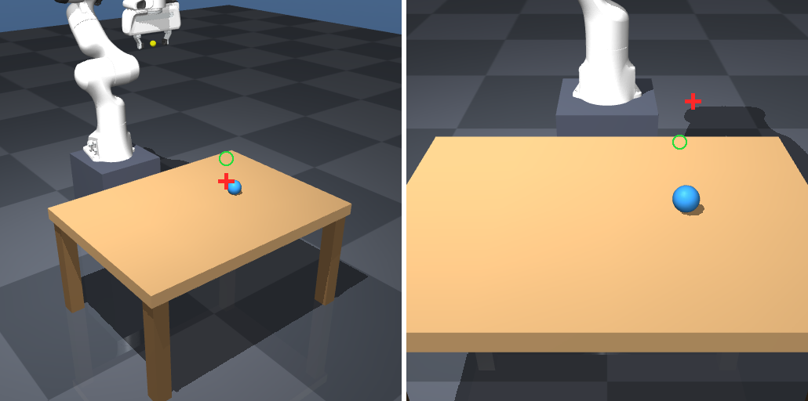

Qwen3.5-0.8B CABTO 视觉打点评估
模型：mlx-community/Qwen3.5-0.8B-4bit；协议：5种物体 × 4个布局，双视角512×512打点、三角化、Franka抓取。
2 / 20端到端抓取成功
10%成功率
158.5 px像素误差中位数
184.5 px像素误差均值
与原3B结果对照
Qwen3.5-0.8B-4bit：2/20
Qwen2.5-VL-3B-Instruct-4bit：12/20
两者使用相同的5物体×4布局评估规模。0.8B模型已真实运行，结果没有用3B数据代替。
0.8B 打点叠加图

rubber_ball / seed 1；红叉为模型打点，绿圈为三角化3D点重投影。
成功样例视频
证据与边界
完整20次明细：eval_pick_qwen3_5_0_8b.json。模型权重未复制进工程；运行时由MLX缓存加载。该结果是本次新补跑，不是原工程历史结果。